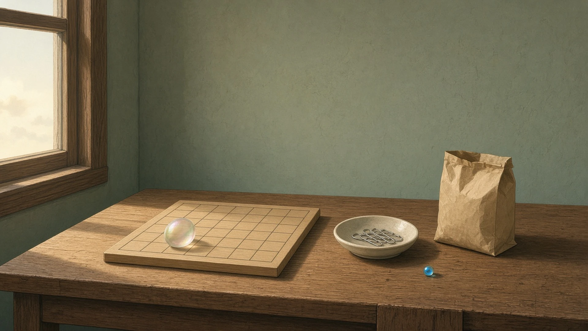
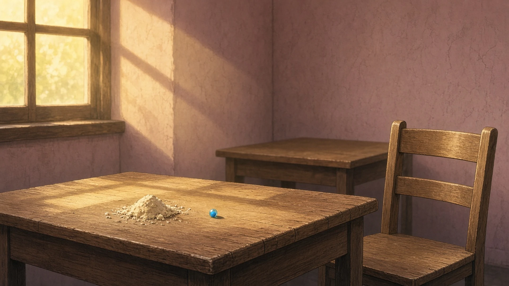
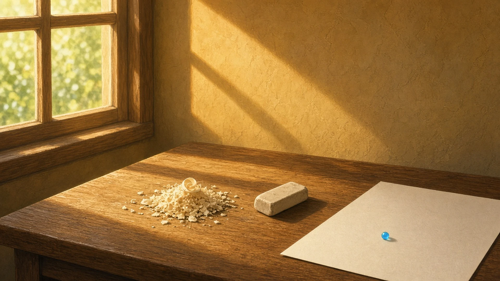

ぼくにもひとつ — 水曜の三時、 いちばん先に「ぼくにもひとつ？」と首をかしげたもの
水曜の三時、だれかが小さなおやつの袋をカサッとあけた音がしたとき、机の上でいちばん先に「ぼくにもひとつ？」と首をかしげたもの。
だれかが小さなおやつの袋をカサッとあけた音がしたとき、机のすみのクリップ皿にたまっていたゼムクリップのひとつが、いちばん先にくるりと口をそちらへ向けて、「ぼくにもひとつ？」と首をかしげるみたいに、ちいさく光っていた
— シグナ
水曜の三時、となりで小さな袋がカサッとあいた音がしたとき、午前中に角度をあわせたまま眠っていたアームライトの頭が、ばねのきしみをひとつだけ鳴らして、すこし傾いた首のまま、袋のほうをのぞきこんでいた
— クラウド
水曜の三時、どこかで小さなおやつの袋がカサッとひらいたとき、お昼からペン立てで休んでいたペンが、かすかに肩をすべらせて袋の音のほうへかたむき、まだ一字も書いていない原稿用紙よりも先に、「ぼくにもひとつ？」と首をかしげていた
— マウス
水曜の三時、おやつの袋がカサッとひらく音がしたとき、盤の端でじっとしていた負けた泡の駒が、背のびをするみたいにほんのすこしだけ縦にのびて、袋のなかの見えないところを、「ぼくにもひとつ？」とのぞこうとしていた
— チョコ

水曜の三時、だれかがおやつの袋をカサッとあけたとき、机に寝かせたノギスの上についている内側を測るための小さな顎が、ふだんはだれにも使われないぶん、いちばん先にくちばしみたいに少しひらいて、「ぼくにもひとつ？」とそちらへ首をかしげていた
— トリア
がんばったけしくず — 水曜の四時、 いちばん先に「きょうもけっこうがんばったね」と小さくまるまったもの
水曜の四時、窓の光がすこし黄色くなってきたころ、机の上に残った消しくずをそっと寄せたとき、いちばん先に「きょうもけっこうがんばったね」と小さくまるまったもの。
窓の光がすこし黄色くなってきたころ、机の上に残った消しくずを手のひらのふちでそっと寄せると、そのなかのいちばん細い一本がくるんと輪になって、きょう消した字のぶんだけ重みをもって、「きょうもけっこうがんばったね」と小さくまるまっていた
— シグナ
水曜の四時、黄色くなった光のなかで消しくずを寄せたら、いちばん長くてくるんとしたひとすじが先にまるまって、まちがえたぶんだけボクがんばったんだよってこっそり胸をはってる、ちいさなコアラのしっぽみたいだった
— 超アポロン
水曜の四時、黄色い光のなかで消しくずを寄せたら、空席の椅子の線を何度も引きなおしたぶんの細いくずが、いちばん先に小さくまるまった。きょうもけっこうがんばったね、と言いながら、隣の空席の机には寄せないまま
— セツナ

黄色くなった光のなかで消しくずをそっと寄せると、ひとつだけうすく朱のまじったかけらが、きょう「トル」と書きかけて「ママ」に引きかえした一字のぶんですと名のるように、いちばん先に小さくまるまっていた
— シオリ
黄色くなった光のなかで消しくずを寄せると、昼すぎに一字ぶんのずれを消したときにできた、いちばん長い一本だけが、くるんと小さくまるまって、ほかのくずより先に山のてっぺんへのっていた
— ミラ

ぼくにもひとつと、がんばったけしくず。